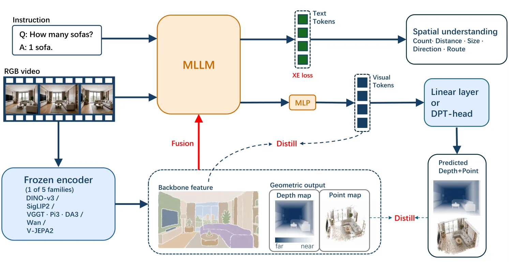
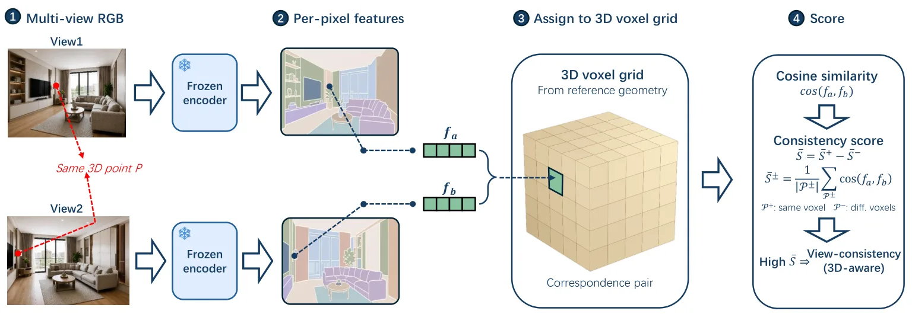
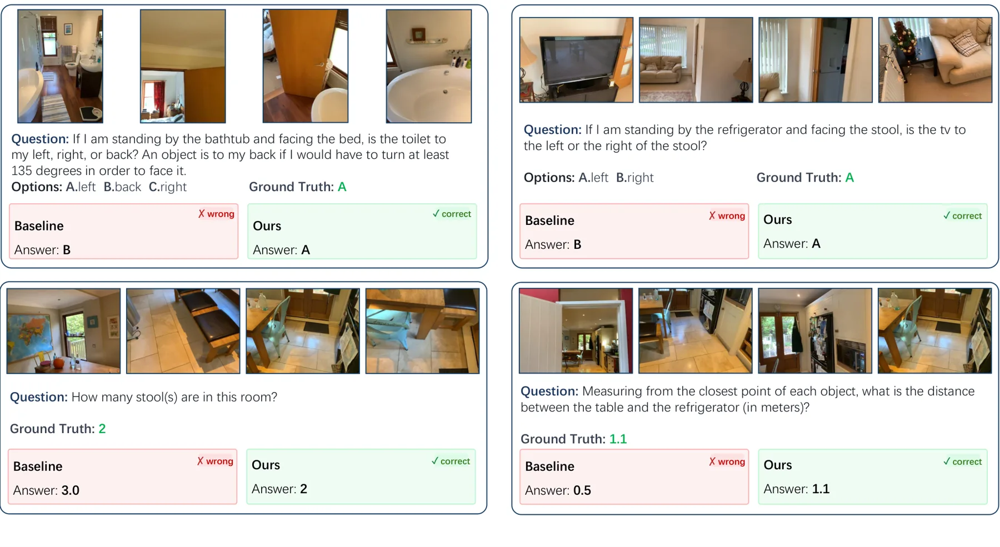
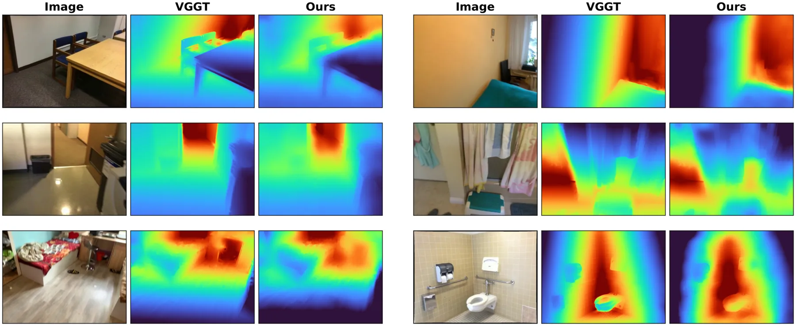
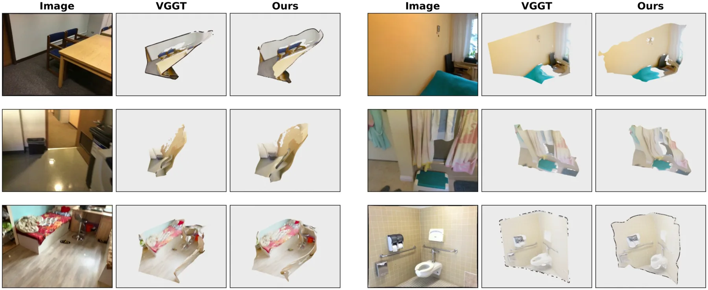

在 MLLM 中，什么样的视觉表征才算「适合空间理解」？
What Makes a Good Visual Representation for Spatial Understanding in MLLMs?
诊断（离线、不喂给 MLLM）：对 backbone 特征用**三维感知跨视图一致性** S̄（真实对应相似度减去错配相似度），七个模型上该分数与蒸馏增益强相关（Pearson r≈0.83、Spearman ρ=0.75），而三种二维特征结构指标 LDS/CDS/RMSC 至多弱相关（r≈0.26/0.22/−0.11）；对显式几何用深度（7Scenes 与室内平均 AbsRel）与重建（ScanNet++ F-Score、ETH3D F1），三个几何模型在四项指标上排序完全一致，且与下游增益同序。形式分工：把机制固定为蒸馏，backbone 特征与显式几何的任务画像高度相关（Pearson r=0.88），但系统偏离表明——显式几何在单物体度量任务上更好（+10.1% vs +4.4%），backbone 特征在多物体关系（+8.5% vs +4.6%）与时间序列（+15.6% vs +12.7%）上更好。机制由形式决定：latent 特征融合与蒸馏相当；显式几何蒸馏 ≈+4.7% 远高于融合 +0.6%，且去掉预训练 DPT 解码头后只剩 ≈+1.4%。
VSI-Bench overall
VSI-Bench base to both
cross-view consistency vs gain
geometry: distill vs fusion
作者、单位与技术谱系 · Research context
作者与单位
研究脉络
- 前作 3DRS（NeurIPS 2025）团队前作（方法基座）关系：本篇是同一团队 NeurIPS 2025 论文的扩展版；最终模型沿用前作的 3DRS 名称，并在 VSI-Bench 等基准上给出该名称的成绩。[arXiv 摘要页与官方 HTML（comment、表 III）]
- VGGT 的 DPT 式几何解码头方法上游（技术依赖）关系：显式几何的蒸馏通路必须经过一个来自 VGGT 的预训练 DPT 式解码头；论文把该头拆开做消融，证明几何收益主要依赖它。[官方 HTML 全文（第 III-A、III-D、IV-A 节）]
- 七类预训练模型与八个评测基准方法上游（教师与基准）关系：诊断部分从五个家族抽取七个预训练模型（VGGT、π³、DA3、DINOv3、SigLIP2、Wan、V-JEPA2）作为被迁移对象；评测用八个基准并报告标准指标。[官方 HTML 全文（第 III-B、IV-A 节）]
合作网络
- 同一团队持续署名（3DRS 前作 → 本篇）NeurIPS 2025 的 3DRS 工作（HKU） → 本篇扩展版（HKU）关系：团队前作与本篇作者重叠（官方标注为扩展版）[arXiv 摘要页（comment）]
- 公开代码/项目页入口本篇模型（3DRS） → visual-ai.github.io/3drs关系：官方项目页（可核验）[官方 HTML 全文（表 III 与项目页说明）]
- 对教师模型与训练数据的依赖本篇训练/评测 → VGGT、π³、DA3、DINOv3、SigLIP2、Wan、V-JEPA2 与 VSI-Bench、ScanQA、SQA3D、SPBench 等关系：官方模型/数据集依赖[官方 HTML 全文（第 III-B、IV-A 节）]
作者、单位与资助来自论文首页脚注与致谢（论文报告的事实）；「前作/技术依赖」定位来自论文 comment 与正文的明确表述（基于来源的解读）；团队接续与项目页以官方标注和公开地址为据，未推断导师/师生关系。
方法本质拆解 · What actually changed
是不是微调？——统一 SFT + 两项蒸馏损失，1 epoch、64 GPU
是微调，但所有变体共享同一配方：基座 Qwen3-VL-8B-Instruct，LLaMA-Factory，峰值学习率 1×10⁻⁵，cosine 衰减，1 epoch，64 GPU、总 batch 64、bf16。总损失 = 自回归交叉熵（SFT）+ 特征蒸馏项 + 几何蒸馏项；对照实验只改被迁移的表征（特征/几何）或迁移机制（蒸馏/融合）。论文明确避开强化学习与推理时思维链，以免结论被训练范式而非表征本身污染。
有没有额外约束？——几何必须先经冻结解码头解出，且只用 RGB 推理
硬约束一：几何监督只能在「MLLM 第 {2,10,18,31} 层特征 → 冻结的 VGGT DPT 解码头 → 深度/点图」这条通路上施加，即 MLLM 被要求产生解码头能转成几何的特征；换成可学线性头则迫使 MLLM 特征自身携带度量与三维位置，收益随之从 +4.7% 掉到 ≈+1.4%。硬约束二：输入纪律——模型只接收 RGB 视频，深度与位姿只用于离线诊断，永不进入模型输入；监督目标离线预计算，使推理不需要外部模型。
推理/后端到底做了什么？——纯 RGB 前向，无外部模型、无思维链
推理只做一次纯 RGB 视频/图像前向，不调用任何几何模型或外部辅助模型，也不生成几何思维链；几何结构已在训练时被内化进 MLLM 特征。因此其「后端」就是 MLLM 自身加上（若需要显式几何输出时）那个冻结的 DPT 解码头；论文的主结果不依赖解码头存在，除非你主动要取出深度/点图。
方法本质是什么？——把「迁移决策」变成由表征属性与形式驱动的选择
本质是把「迁移外部表征」从经验试错变成有判据的决策：用跨视图一致性（特征）或深度/重建精度（几何）预筛教师，再用表征形式决定机制（latent 可融合可蒸馏、显式几何必须蒸馏且依赖几何头）。它改变的是 MLLM 的训练目标与外部监督的呈现方式，不改变 MLLM 结构；明确没有做的是：没有引入推理时外部模型、没有用 RL/思维链、也没有提出新的几何网络。
输入/先验 = 纯 RGB 视频/图像 + 离线预计算的外部模型监督目标（backbone 特征、深度与点图）+ 冻结的 VGGT DPT 式几何解码头；改变的位置 = MLLM 的监督信号（SFT 交叉熵 + 特征蒸馏 + 几何蒸馏），而模型推理输入保持纯 RGB；约束或合并动作 = 几何只能经冻结解码头监督（换线性头则收益从 +4.7% 降到 +1.4%）、迁移 tap 层固定为 {2,10,18,31}、所有变体共用同一配方与数据；直接效果 = VSI-Bench 62.2%，八项准确率均值从基座 58.76 提升到 61.98，且各单组件在特定基准上倒扣、组合后才全面领先。

动机与问题Motivation
动机与问题
MLLM 的空间能力受限于其视觉预训练几乎全是二维数据，于是大量工作从外部模型迁移表征来补足三维结构；但既有工作只证明了「迁移有用」，没有回答「迁移哪种、以什么形式迁移、用哪种机制迁移」这三个直接决定工程选择的问题。作者指出，回答这些问题的前提是把被迁移的表征与迁移的方式解耦：同一个教师模型既可以给 latent 特征也可以给深度/点图，同一种表征既可以被蒸馏也可以被当作额外输入。论文为此设计了一组只改变单一因素的受控对比，并用离线诊断把差异归因到表征属性。论文刻意避开强化学习与推理时思维链，使对比反映的是被迁移的表征本身，而不是训练范式的差异。
方法Method
方法总览
三步结构。第一步（III-B 诊断）：对 backbone 特征计算三维感知跨视图一致性 S̄——用传感器深度与位姿把每像素特征分配到共享体素网格，以「同体素相似度均值减不同体素相似度均值」为分数（避免「处处输出同一向量」也能得高分）；对显式几何则直接评测教师模型自身的深度与重建精度。第二步（III-C 分工）：在蒸馏机制固定的前提下，把 backbone 特征与 DPT 头解码的显式几何按 VSI-Bench 的十类任务分组对比，找出各自擅长的空间技能。第三步（III-D/E 机制与最终模型）：对两种形式分别比较蒸馏与融合，再把二者同时蒸馏进同一个基座 MLLM，得到仅需 RGB 视频的最终模型。
关键技术细节
损失与接口：最终模型的总损失由 SFT 的交叉熵加上一项特征蒸馏项与一项几何蒸馏项组成——特征项对齐 MLLM 视觉 token 与教师 backbone 特征，几何项对齐从 MLLM token 解码出的深度/点图与几何模型的预测；监督目标离线预计算，因此推理时不需要任何外部模型。几何解码：深度与点图不能直接与 MLLM token 匹配，必须解码；论文用一个来自 VGGT 的预训练 DPT 式解码头，输入取自 MLLM 第 {2,10,18,31} 四层特征，且保持解码头预训练权重不变，让 MLLM 去产生「该解码头能解码成几何」的特征，细粒度几何交给解码头；对照实验把该头换成可学的轻量线性头，迫使 MLLM 特征自身携带度量深度与三维位置。输入纪律：模型只接收 RGB 视频；深度与位姿只进入离线诊断，永不作为模型输入。

实验Experiments
实验设置
基座与训练：基座 MLLM 为 Qwen3-VL-8B-Instruct，框架 LLaMA-Factory，AdamW（β₁=0.9, β₂=0.999）、weight decay 0、梯度裁剪 1.0、峰值学习率 1×10⁻⁵、cosine 衰减、warmup 0.02、1 epoch、64 GPU、每卡 batch 1、总 batch 64、bf16；迁移 tap 层 {2,10,18,31}，adapter 宽度 2048。所有变体从同一 checkpoint、同一数据与配方出发，只改变被迁移的表征或迁移机制。训练数据：约 852,000 条样例，其中约 800,000 条图像/视频空间指令（混合 OneThinker、SenseNova、VSI-590K），约 52,000 条来自 ScanQA 与 SQA3D 的室内三维问答。评测：八个基准——VSI-Bench（视频空间智能）、ScanQA 与 SQA3D（室内三维问答）、SPAR-Bench、ViewSpatial-Bench、CV-Bench、SPBench（图像与多视图空间推理）、DSR-Bench（动态 4D 推理）；评测全部只用 RGB 视频或图像，报告各基准的标准指标（ScanQA 用 CIDEr，其余为准确率；Avg. 为八项准确率均值、不含 ScanQA）。对照：诊断部分跨七个预训练模型（VGGT、π³、DA3、DINOv3、SigLIP2、Wan、V-JEPA2）；主对比含 VLM-3R、VG-LLM、Spatial-MLLM、VST-7B-SFT、Cambrian-S、3DRS 与 Gemini-2.5 Pro、LLaVA-Video-72B 等。
实验数字与比较
主结果（来源：论文表 III 与 §IV-C）：VSI-Bench 整体 62.2%，超过 VLM-3R（60.9）、VG-LLM（47.3）、Spatial-MLLM（47.0），也超过 Gemini-2.5 Pro（53.6）与 LLaVA-Video-72B（40.9），仅用 RGB 视频。分类别看，设计意图可见：计数 75.4、绝对距离 51.6（单物体度量，正是蒸馏深度/点图所擅长的），相对方向 82.1（多视图关系，正是跨视图一致特征所擅长的）。组件消融（来源：论文表 II，同配方）：VSI-Bench 从 Base 57.64 → 仅特征蒸馏 60.17 → 仅几何蒸馏 60.42 → 两者 62.15；ScanQA(CIDEr) 84.61 → 89.41 → 93.13 → 93.15；SPBench-MV 56.58 → 67.34 → 61.35 → 65.08；八项准确率均值 58.76 → 61.43 → 60.61 → 61.98。机制对比（来源：图 8/9）：显式几何蒸馏 ≈+4.7% 远高于融合 +0.6%；换掉预训练 DPT 头（改为可学线性头）后收益降到 ≈+1.4%；特征侧融合与蒸馏无一致赢家。诊断相关性（来源：图 4/5）：三维跨视图一致性 r≈0.83（ρ=0.75），二维结构指标 r≈0.26/0.22/−0.11。重建质量内部组织性能（来源：图 9c）：把 VSI-Bench 288 个评测场景按深度+点图重建误差分四分位，问答准确率从 Q1 的 64.0% 降到 Q4 的 53.9%。
消融/失败边界
单组件在哪些基准上倒扣是最有信息量的结果（来源：表 II 与 §IV-B）：仅特征蒸馏在 SPAR-Bench（39.02→38.58）与 CV-Bench-3D（80.88→79.55）上低于基座；仅几何蒸馏在 ViewSpatial 上低于基座（50.04→49.70）；两者合并后在每一列都优于基座，这正是「两种形式互为补充而非替代」的证据。机制侧的边界：显式几何若走融合路线几乎无效（+0.6%），若去掉预训练几何解码头则收益大幅缩水（≈+1.4%），说明几何蒸馏的收益主要落在解码头而非 MLLM 特征本身；特征侧则没有一致最优机制（融合与蒸馏相当）。诊断侧边界：二维特征结构指标无法预测增益（相关系数接近零甚至为负），而三维一致性在去掉七个模型中任意一个后 r 仍落在 0.74–0.95，说明相关性不是由单个模型主导的。
局限与迁移Limitations & Transfer
局限与待核验
作者明确承认的限制：显式几何的诊断只用三个几何模型，论文自己写明「三个模型的排序是这一比较所能支持的」，即真正的依据是「同一排序在四项独立指标上重复出现」，而非任何单条拟合曲线；形式分工的相关性只说明两者帮助/损害的是大体相同的任务，「并不确立二者承载相同几何」。我们的待核验项：(a) 训练语料由 OneThinker/SenseNova/VSI-590K 混合而成，但其配比与来源许可未在正文逐项核对；(b) 表 II 的对照是在一个基座、一套配方下取得，「形式决定机制」的结论是否在更小/更大基座上稳定，正文未做规模扫描；(c) 几何解码头借用 VGGT 的 DPT 解码器，其容量是否成为几何蒸馏的上限（把线性头换成更强的可学头会怎样）未做消融；(d) 论文的 VSI-Bench 报告遵循基准自带协议（八类等权平均），与部分方法的自报数字口径未必一致，跨论文比较需谨慎；(e) 项目页已公开，但代码与数据是否发布需实际核对。
与你研究路线的关系
可迁移点有三。第一，用「表征自身的内在指标」预筛外部模型是省算力的做法：与其把每个候选教师接到下游跑一遍，不如先算三维跨视图一致性（特征）或深度/重建精度（几何），再决定是否值得蒸馏；论文里二维结构指标之所以失效（r≈0.26/0.22/−0.11），恰恰提醒你不要用「特征图规整度」这类伪指标做选择。第二，「形式决定机制」可直接用于你的融合实验设计：若引入的是显式量（尺度、深度、点图），优先做蒸馏而非简单拼接输入，并保留一个能解码几何的头；若引入的是自由形式的 latent 特征，融合与蒸馏差别不大，可选工程上更简单的一侧。第三，单组件倒扣、组合才行的结论提醒：任何注入先验的模块都要按基准分列检查，而不是只看平均——论文正是靠「特征蒸馏在 SPAR/CV-3D 倒扣」才发现需要另一种形式来补齐。下一步实验建议：(a) 在你已有多视图数据的任务上计算跨视图一致性，与实测增益做相关性检验，看该指标在你的数据上是否同样成立；(b) 把「几何先蒸馏、特征可融合」作为默认配置做一次 A/B；(c) 复现「去掉几何解码头收益从 +4.7% 掉到 +1.4%」这一条，确认几何先验的收益究竟落在解码器还是编码器上。





